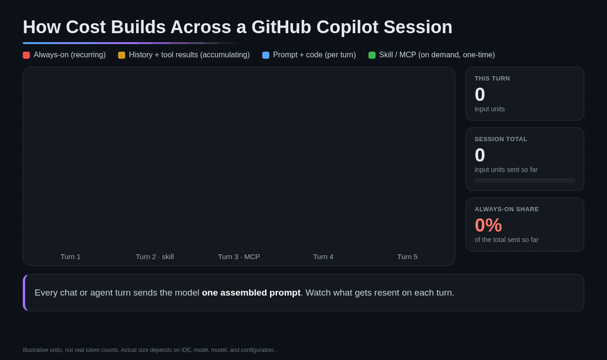

What Fills the Context Window
Copilot sends the context it has access to as input tokens, and that context adds up: open editor tabs, attached files, and the full back-and-forth of a long conversation all count as context.
Source: GitHub Docs, Optimizing your AI usage
flowchart LR
SP[System prompt] --> W[Context window]
CI[Custom instructions] --> W
TL[Tool and MCP schemas] --> W
MSG[Messages and history] --> W
TR[Tool results] --> W
W --> REQ[Every model request]
class SP neutral
class CI,TL warning
class MSG,TR data
class W azure
class REQ danger
Orange items repeat on every turn, so they are recurring cost. Teal items grow as the session continues. Everything in the window is billed as input on each request.
In Copilot CLI and the GitHub Copilot app, /context breaks the window into System Prompt, Custom Instructions, System Tools, MCP Tools, Messages, Free Space, and Buffer. In VS Code, hover the context window control in the chat input for a category breakdown.

Task, Context, and Stop Condition
A vague prompt forces the agent to infer intent, explore, and make judgment calls. That leads to retries, scope drift, and extra turns. Three qualities fix most of it, and they add very few tokens:
Task
What to change, where, and what correct looks like. Not just “fix this”.
Context
The files, errors, logs, or examples that matter, so the agent doesn't search for them.
Stop condition
What done looks like, so the agent doesn't keep refactoring, committing, or expanding scope.
fix the testsAfter
Task: make test_bulk_discount_applied_before_tax pass. Context: orders/pricing.py, order_total(). The 10% bulk discount applies to the subtotal before the 8% tax. Constraints: change only orders/pricing.py. Stop when: python -m unittest passes. Reply with the diff only.
Smallest Authoritative Context
Attach the file, snippet, or document the task actually needs, not the whole repository just in case. Ground the agent before broad exploration: name files, include the error, and state the constraint.
Exclude noise from search
Search match snippets count toward the context window even when the agent never opens the file. Generated output, logs, and dependencies make searches noisy.
| Setting | Effect |
|---|---|
.gitignore | Excludes files from the VS Code workspace index and from agent text search and grep |
files.exclude | Hides files from VS Code entirely, including the index and agent search |
search.exclude | Excludes files from agent search while keeping them visible in the Explorer |
Scope Copilot CLI to the task
- Copilot CLI limits file access to the working directory and its subdirectories. Start in the narrowest correct directory (
-C DIRECTORY), check it with/cwd, and use/add-dironly when the task needs another directory. - Tool output larger than 20 KiB is saved to a temporary file, and the model receives the path and a preview. Raising
COPILOT_LARGE_OUTPUT_THRESHOLD_BYTESleaves less room for the conversation. - Ask for a diff or the specific change, not a restated file. Output tokens are the most expensive category on most models.
Deterministic Guardrails
Agents are non-deterministic, and small errors compound in multi-step work. Unit tests, linters, and security scans give a clear pass/fail signal so the agent corrects course before building on a mistake.
Each check adds a few tokens, but teams with these guardrails see fewer retries and often use fewer tokens in total. Put the test command in your instructions and the acceptance check in your stop condition.
Best Practices
Name the files
Point at the exact paths and symbols instead of letting the agent search.
State done
End every agentic prompt with a verifiable stop condition.
Ask for diffs
Request the change, not the whole file, when that satisfies the task.
Keep ignore rules current
Exclude logs, build output, and dependencies from search.
Next Steps
- Learn which customizations add context on every turn in Always-On vs. On-Demand Customizations.
- Review what Copilot remembers in Copilot Memory Hygiene.
- Apply all of this in Lab 02: Lean Context, Instructions, and Tools.